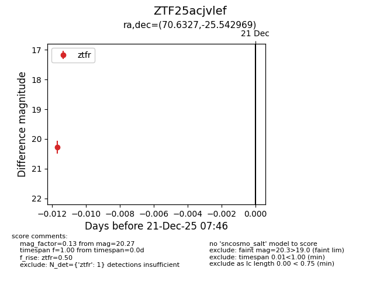
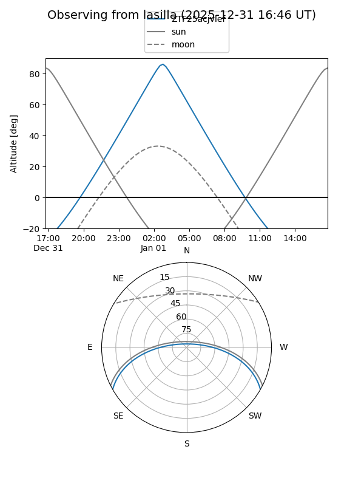
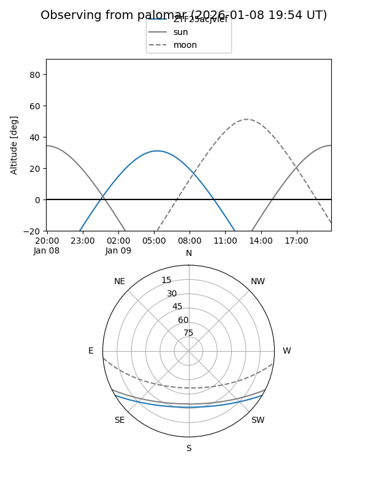

ZTF25acjvlef
Target ZTF25acjvlef at 2026-01-09 12:49
Aliases and brokers:
FINK: link
Lasair: link
ALeRCE: link
alt names
ZTF25acjvlef (ztf,fink_ztf)
Coordinates:
equatorial (ra, dec) = 70.6327,-25.54297
equatorial (HMS+DMS) = 04:42:31.84,-25:32:34.69
galactic (l, b) = (225.0840,-38.66999)
Flags:
Photometry:
last ztfr=20.27
1 ztfr detections
Lightcurve

Visibility


Additional plots